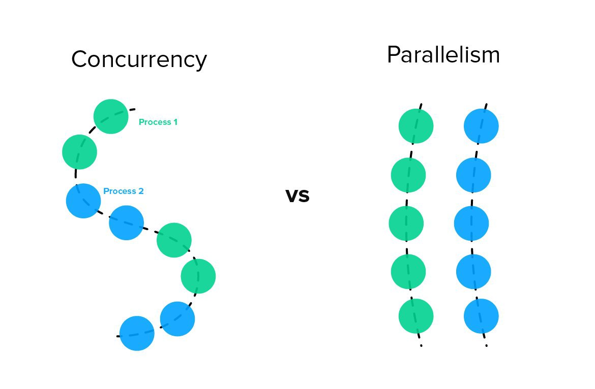

This is the list of simple project you should if you are learning language. Building project help one understand more about language and it's tools.

This is the simple request and response code using request python to display the operation which are I/O-bound and CPU-bound
import requests
# I/O-bound web request
response = requests.get("https://www.example.com")
items = response.headers.items()
# CPU-bound response processing
headers = [f'{key}: {headers}' for key, header in items]
# CPU-bound string concatenation
formatted_headers = "\n".join(headers)
# I/O-bound write to disk
with open('headers.txt', 'w') as file:
file.write(formatted_headers)
I/O refers to a computer's input and output devices such as a keyboard, hard drive and most commonly, a network card.
An I/O-bound operation, it would get faster if our I/O devices could handle more data in
less time. An example os an I/O-bound operation would be making a request to a web server or
reading a file from our machine's hard drive.
A CPU-bound operation, it would complete faster if our CPU was more powerful, for instance by increasing its clock speed from 2GHz to 3Ghz. CPU-bound operations are typically computations and processing code in the Python world. An example of this is computing the digits of pi and looping over the contents of a dictionary, applying business logic.
It means that a particular long-running task can be run in the background separate from the main application.
Instead of blocking all other application code waiting for that long-running task to be completed, the system is free to do other work, that is not dependent on that task.
import asyncio
async def delay(delay_seconds: int) -> int:
print(f'sleeping for {delay_seconds} second(s)')
await asyncio.sleep(delay_seconds)
print(f'finished sleeping for {delay_seconds} second(s)')
return delay_seconds
async def hello_every_second():
for i in range(2):
await asyncio.sleep(1)
print("I'm running other code while I'm waiting!")
async def main():
first_delay = asyncio.create_task(delay(3))
second_delay = asyncio.create_task(delay(3))
await hello_every_second()
await first_delay
await second_delay
asyncio.run(main())
It means that a particular set of function or code are executing in sequential manner and it any line of code requirement time then entire code after it have to wait for execution.
from time import sleep
def main():
print("Started")
sleep(1)
print("hello")
print("paradox")
sleep(1)
print("Completed :)")
if __name__ == "__main__":
main()
Concurrency is about multiple tasks that can happend independently from one another. We can have concurrency on a CPU with on one core, as the operation will employ "preemptive multitasking" to switch between tasks.
Parallelism means that we must be executing two or more tasks at the same time. One a machine with one core, that is not possible. To make this possible, we need a CPU with multiple cores that can run two tasks together.
While parallelism implies concurrency, concurrency does not always imply parallelism
With concurrency, we have multiple tasks happening at the same time, but only one we're actively doing at a given point in time. With parallelism, we have multiple tasks happening and are actively doing more than one simultaneously.
When we say two tasks are happening concurrently, we mean those task happening at the same time. Take, for a instance a baker baking two cakes. To bake these cakes, we need to preheat our oven. Preheating can take tens of minutes depending on the oven and the baking temperature, but we don't need to wait for our oven to preheat before starting other tasks, such as mixing the flour and sugar together with eggs. We can do other work until the oven beeps, letting us know it is preheated. We also don't need to limit ourselves from starting work on the second cake before finishing the first. We can start one cake batter, put it in a stand mixer, and start pre-paring the second batter while the first batter finishes mixing. In this model, we're switching between different tasks concurrently. This switching between tasks (doing something else while the oven heats, switching between two different cakes) is concurrent behavior.
When we say something is running in parallel, we mean not only are there two or more tasks happening concurrently, but they are also executing at the same time.
Going back to our cake baking example, imagine we have the help of a second baker. In this scenario, we can work on the first cake while the second baker works on the second. Two people making batter at once is parallel because we have two distinct tasks running concurrently.
A process is an application run that has a memory space that other applications cannot access.
import multiprocessing
from time import sleep
def Paradox():
print("Started")
sleep(1)
print("Completed!")
def main():
processes = []
# Creating processes and storing in list
for _ in range(3):
processes.append(multiprocessing.Process(
target=Paradox
)
)
# starting processes
for p in processes:
p.start()
# joining processes
for p in processes:
p.join()
if __name__ == "__main__":
main()
Threads can be thought of as lighter-weight processes. In addition, they are the smallest construct that can be managed by an operating system. They do not have their own memory as does a process; instead, they share the memory of the process that created them. Threads are associated with the process that created them. A process will always have at least one thread associated with it, usually known as the main thread. A process can also create other threads, which are more commonly known as worker or back- ground threads. These threads can perform other work concurrently alongside the main thread.
import threading
from time import sleep
def Paradox():
print("Started")
sleep(1)
print("Completed!")
def main():
threads = []
# Creating threads and storing in list
for _ in range(3):
threads.append(threading.Thread(
target=Paradox
)
)
# starting threads
for p in threads:
p.start()
# joining threads
for p in threads:
p.join()
if __name__ == "__main__":
main()
Multitasking is the practice of doing multiple things simultaneously, such as editing a document or responding to email while attending a teleconference. The concept of multitasking began in a computing context.
Types of multitasking:
In this model, instead of relaying on the operating system to decide when to switch between which work is currently being executed, we explicitly code points in our application where we can let other tasks run.
In this model, we let the oprating system decide how to switch between which work is currently being executed via a process called time slicing.
When the operating system switches between work, we cal it preempting.
Asyncio uses coperative multitasking to achieve concurrency.
Cooperative multitasking has benefits over preemptive multitasking.
Best way to utilize either concurrency or parallelism depends on the efficency of application. If you building scalable real world application then you have to opt for the way which is efficient.